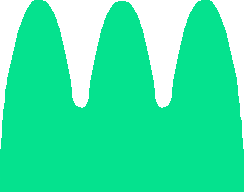

DOE
Esta aplicación proporciona una herramienta sencilla para estudiar el comportamiento de Ondas Planas Homogéneas y Monocromáticas al atravesar discontinuidades en el medio en el que se propagan. En esta primera versión, sólo se contemplarán medios sin pérdidas, pero la aplicación es capaz de calcular impedancias complejas cuando se colocan láminas de un grosor que no es múltiplo de un cuarto de la longitud de onda. Para cualquier caso imaginable, la aplicación trazará el Diagrama de Onda Estacionaria (DOE) y especificará las impedancias y los coeficientes de reflexión para cada discontinuidad en una interfaz sencilla y fácil de utilizar.
This app provides a basic tool in order to study the behavior of Monochromatic Homogenous Plane Waves when traveling through different media. In this first version, only media without loss are studied, but it is indeed capable of calculating complex impedances, which appear when there are media with a thickness that is not a multiple of a quarter-wavelength. For any imaginable case, this application will draw the Standing Wave Diagram and specify the input impedances, the SWR, and the reflection coefficients for each discontinuity.